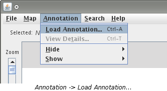
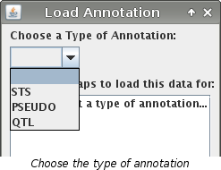
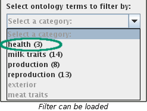
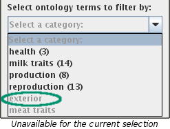
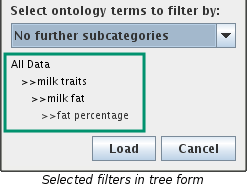
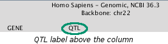
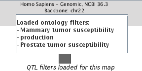

Annotation can only be loaded after at least one map has been loaded. If you need to load a map, you can follow the instructions on how to Load a Map.


 

  Note: Even if no QTL exists on a map but was chosen to be loaded for it, it will be in the list. In the above picture, a Bos Tauraus map is also loaded. The "production" filter was chosen to be loaded for both maps. This filter only exists on Bos Taurus but since it was chosen to be loaded for the Homo Sapiens map also, it appears in the listing.